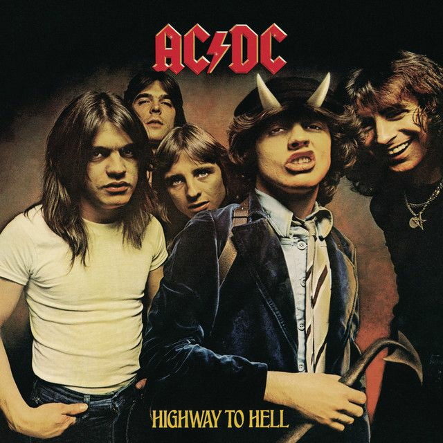

Trayectoria musical
AC/DC es una banda de hard rock británica-australiana, formada en 1973 en Australia por los hermanos escoceses Malcolm Young y Angus Young. Sus álbumes se han vendido en un total estimado de 200 millones de copias, embarcándose en giras multitudinarias por todo el mundo y sus éxitos han musicalizado varias producciones cinematográficas sobresalientes
Album más reconocido

1- Highway to Hell
2- Girls Got Rhythm
3- Walk All Over You
4- Touch Too Much
5- Beating Around the Bush
6- Shot Down in Flames
7- Get It Hot
8- If You Want Blood (You've Got It)
9- Love Hungry Man
10- Night Prowler